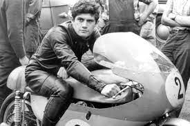
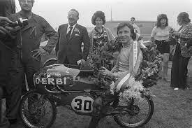
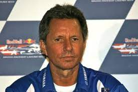
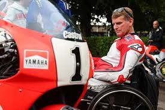
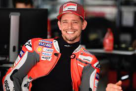

Leyendas de MotoGP
Valentino Rossi
7 veces campeón del mundo en la categoría máxima (500cc/MotoGP). Conocido como "The Doctor".

Giacomo Agostini
15 veces campeón del mundo en 350cc y 500cc. Apodado "Ago".

Mick Doohan
5 veces campeón del mundo en la categoría de 500cc. Dominó en la década de 1990.

Ángel Nieto
13 veces campeón del mundo en varias categorías, incluyendo 50cc y 125cc.

Eddie Lawson
4 veces campeón del mundo en 500cc. Conocido por su estilo suave en la pista.

Wayne Rainey
3 veces campeón del mundo en 500cc. Carismático y talentoso.

Casey Stoner
2 veces campeón del mundo en MotoGP. Estilo de conducción agresivo.
Márquez
8 veces campeón del mundo en distintas categorías, incluyendo 125cc, Moto2 y MotoGP. Ha sido uno de los pilotos más dominantes en la última década.